H2O
飲水行為改變設計 English

角色: UX 研究員、UI 設計師
簡介
在「行為改變設計」課程中，我們五人小組設計了一款行動介入的App來激勵人們定時定量飲水。在設計中，我們納入「損失規避(loss aversion)」的概念，目的在探索「失去生命物件」的表徵如何引發使用者的同理心，並進而激勵使用者喝水。
我們招募了17位受測者，針對三種不同的生命物件(植物、動物與人)執行為期15天的實地評估。我們分析了App數據以及測後訪談的資料，將評估結果與未來建議撰寫為「Do I Care? How Losing a Living Object Triggers Empathy and Motivate Water Intake Behavior.」一長篇摘要。
點此可觀看H2O App的簡介。
設計流程
設計動機

設計原理
實地評估
結果
討論
設計動機
喝水是維持人類正常活動的基本，每日飲水應超過2000毫升也是許多人具備的常識。然而喝水看似一件簡單的任務，許多人仍因為各種原因而忘記喝水、沒有定時喝水或一次攝取過多的水。過去許多激勵飲水的研究都曾使用不同的生命物件作為飲水的譬喻並提供回饋，而我們好奇他們為何選擇某種型態的生命物件，因此在設計中測試了三種不同的生命物件並透過收集使用者的反應。除此之外，我們也想知道「損失規避」是否對使用者產生的害怕失去生命物件的情緒，並進而促使他們飲水。
設計原理

我們根據五位使用者進行紙本原型測試後的回饋修改設計，並完成最終的H2O App。使用者的操作流程將從基礎教程開始，並將使用者導入登入頁並進入主介面。App的功能包括五個部分；提醒使用者喝水與拯救生命物件的通知功能、用來表示生命物件生命值與使用者含水量的水量表、隨時間變化四個階段的生命物件、輸入攝水量的按鈕以及刷新資料庫數據的按鈕。
App的機制會讓生物物件逐漸脫水，如果使用者在兩小時的間隔內沒有喝水，生物物件就會死亡。為了防止物體死亡，使用者就必須給物件水，同時以此提醒他們自己喝水。而生命物件的四個不同階段則作為觸發使用者同理心的手段。
三種生命物件的四個階段如下所示。

 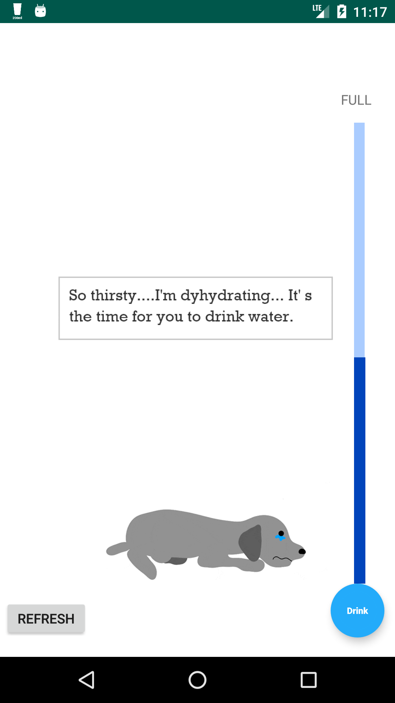
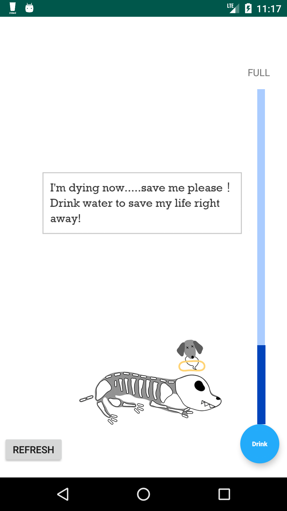
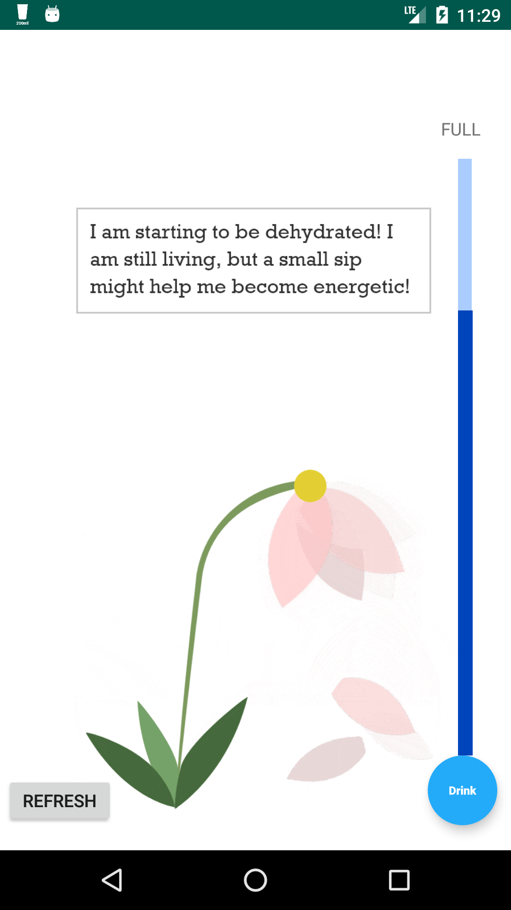
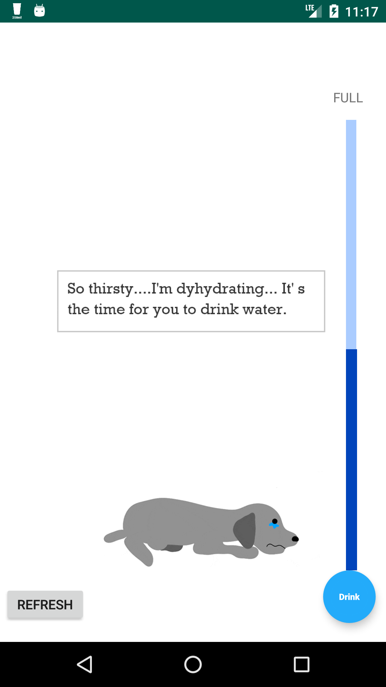
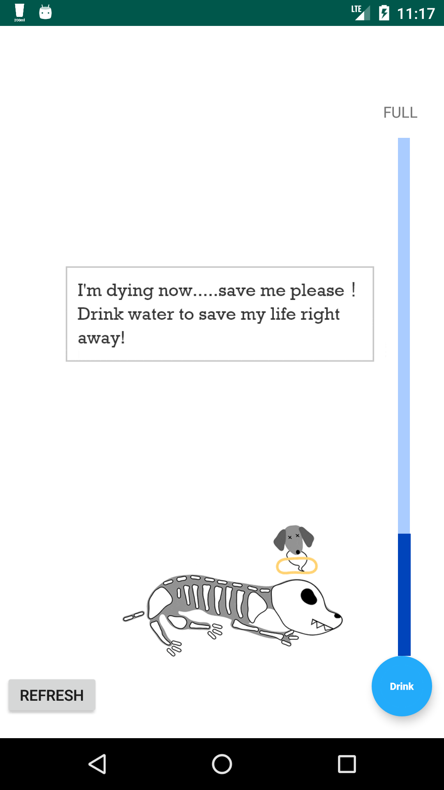
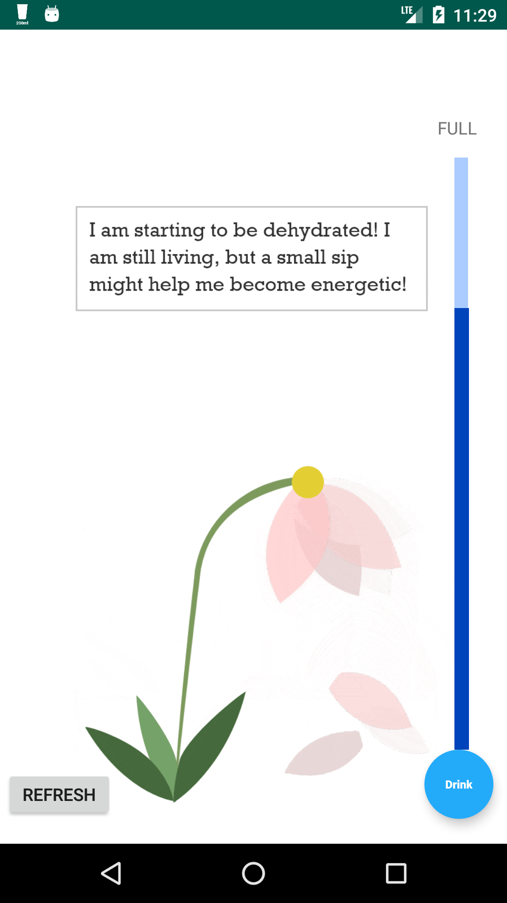
 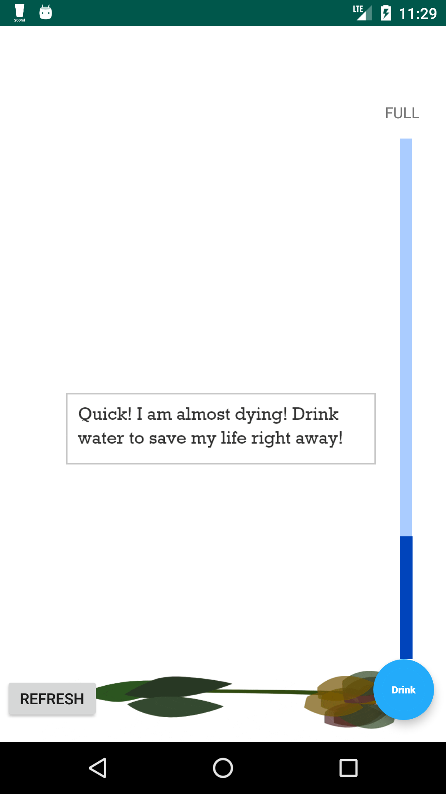
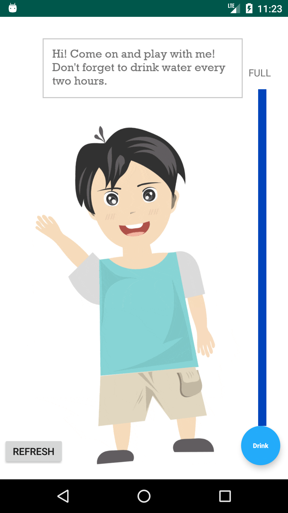
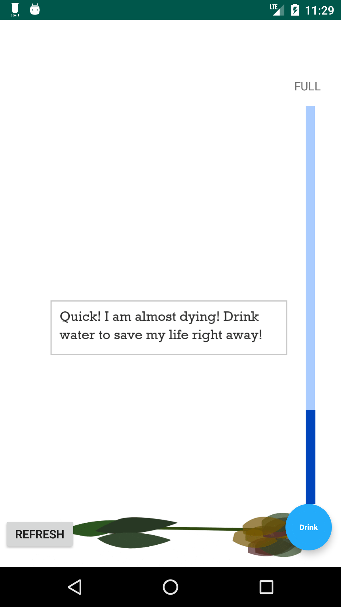
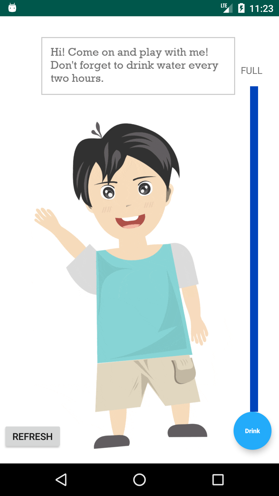


實地評估
為了評估行動介入的有效性，我們進行了為期15天的實地評估研究。首先，我們招募了來自不同背景的17名參與者（8名男性，9名女性，平均年齡為 22歲），當中包括學生，教師，公務員和私營企業員工。
在研究過程中，每個參與者都會接觸到三種不同的生命物件 - 人類，動物和植物。我們隨機地為參與者決定三種生命物件顯示的順序。在評估期間，App的數據會被收集到資料庫中。在研究結束後，我們與參與者進行半結構化的訪談，討論他們的使用經驗。
結果
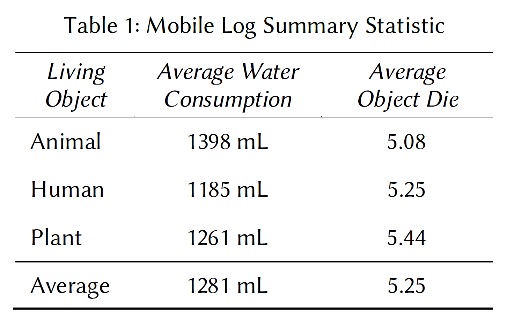表1顯示了各個生命物件的平均攝水量以及物體死亡的次數。從表中可以發現，參與者對這三個生命物件的同情程度並沒有顯著差異。總攝水量適中（1281mL），而生命物件死亡的平均次數高（一日7次中有5.25次）。
為了找出數據背後的行為模式，我們分析了測後訪談的數據。總體而言，超過一半的參與者對H2O App的反應是正向的。61％的參與者主觀地認為他們喝了更多的水。在這3個生命物件中，7個參與者（41.2％）表示動物的影響最大，其次是植物（3個參與者）。另有3名參與者表示他們沒有任何偏好。有趣的是，沒有人偏好人類物件。最後，我們發現，生命物件的影響因參與者而異，通常與參與者的生活經驗和對物件的個人偏好有關。
討論
在本研究中，我們以「損失規避」的機制設計移動介入，嘗試觸發使用者對生命物件的同理心並最終促成飲水行為。我們發現「損失規避」的機制並不完全有效。有趣的是，在訪談後，我們發現一些參與者是從照顧生命物件的過程中產生了同理心，而其他參與者則是從拯救生命物件的過程中產生同理心。參與者對每個生命物件都有自己的偏好。我們的研究揭示了人們如何從生命物件中產生同理心，並對各種生命物件表現出不同程度的同理心。
關於設計和未來改善的進一步討論可以在這裡找到。